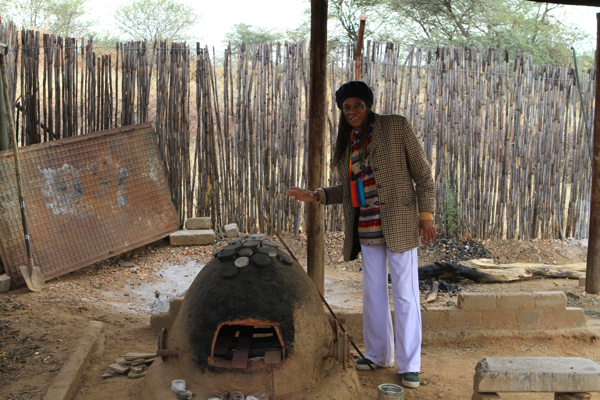

Windhoek
Posted:

After a quick stop at the Parliament, and an unsuccessful attempt to visit the Christkirche we visited the meteorite monument in downtown Windhoek. Evidently Ethan was getting a little tired of site seeing by this time and needed a break for lunch. Which we took at Schneider. Jane had some delicious Curry Wurst, and Josh, Josh, and I all went for the Stroghanoff with Spaetzel. Schneider had some nice outdoor seating, and was surprisingly fast and cheap for a center city lunch stop.
After lunch was the well timed trip to the 'Diamond Factory' We learned a little about diamonds, and then had a tour of the showroom. The tour began with some free glasses of Champagne and ended at the Tanzanite stand. Long time readers of this blog may remember the Tanzanite story from Mexico and how that ended. This was had a somewhat similar, though less expensive, ending to the story. It seems fitting to get some Tanzanite while we're in Africa,especially since our 26th anniversary is only 2 days away.
Our first full day in country
Posted:

Our first full day in country and our first day of touring the Windhoek area.
We started this morning at 9:00 with most of us sleeping in until 7:30 or 8:00. You know we needed the sleep when we were able to overcome the jet lag that quickly. We drove through the city and into the Katatura township, We are told that this township will be positively luxurious compared to some of the others we will see. One thing we noticed was even though the poverty was obvious, there was very little litter and trash on the ground. Everywhere you look you see tiny little shops, barber shops, hair salons, cell phone shops, Bars that are just big enough for a few people to squeeze in.
From Katatura we continued on the Penduka. This is a sort of Women's collective where they make and sell all kinds of hand crafts. Of particular interest was how they refashion old glass bottles into jewelry, particularly beaded jewelry. The picture shows the kiln used to melt the glass and to fire the pottery. We got a full tour of the place, and met a few of the women working on different projects.
From Penduka we went on to the Heroe's Acre. This is a huge monument to commemorate the Namibian Freedom Fighters. Its so interesting to see this history of their struggle for freedom in a country that is Barely 30 years old. Here's a picture of Josh Maritin from the base of the monument.
Posted:
From Penduka we went on to the Heroe's Acre. This is a huge monument to commemorate the Namibian Freedom Fighters. Its so interesting to see this history of their struggle for freedom in a country that is Barely 30 years old. Here's a picture of Josh Maritin from the base of the monument.
You must really like to fly
Posted:
"You must really like to fly" was the comment of the flight attendant from Scotland on our British Air flight from Heathrow to Johannesburg. What prompted the statement was my comment that I would have the curried chicken because "that was good last night." -- We'll return to the concept of good airplane food later. Its Monday. We left Chicago on Saturday. Two overnight flights in a row with a nine hour layover in London. I feel like I've been in the airport forever. Now we are waiting out our final layover in Johannesburg for the final leg of our flight to Windhoek. We are in Africa, but it doesn't really seem like it yet. We've got to get out of the airport and into the real world. The Empowering Learners trip is well underway.
Because we had such a long london layover we did leave the airport and take the tube into London. We walked around the London School of Economics with Josh Martin, and then meandered through the South Bank area having lunch at Giraffe. Yesterday was a hard day, the overnight flight with the 6 timezone change really messes you up. This morning was easier as we flew mostly north to south, crossing only one time zone. We are really thankful to the gate agent in Chicago who rearranged our seats on this flight so that we had the aisle seats in the middle section with nobody in between us. We were able to stretch out and get some decent rest last night.
About this trip. This is not just a trip for fun, this is partly a mission trip and partly a cultural experience. The trip is organized by Empowering Learners, a non profit organized by Ethan Schultz, and Ann Sponberg-Peterson. The goal is to bring 24 laptop computers and 50 calculators to the Oshigambo high school in Northern Namibia. We also carried along an assortment of Braille books, and Soccer balls to distribute along the way. There are a total of 12 of us on the trip and we got all of this stuff along with us in carry on and checked baggage, we are definitely going to be a lot lighter on the drive home than we on the trip here. Once we complete our business working with the high school we'll be visiting the Etosha Game Park and the Atlantic Coast in Swakopmund. More detail to follow.
For now we are safely checked in at the Safari Court Hotel. After two nights sleeping on airplanes and having our morning coffee in airports, we are all ready for a shower! As a group we will have a little break before meeting with our tour guide for the trip and then heading to downtown Windhoek for a meal at a nice German restaurant.
Runestone Interactive
Posted:
What a week its been! So much has happened in the last week that I just have to take some time out to organize my thoughts and get some of this information out there where others can read it.
What is Runestone Interactive?
Runestone Interactive is primarily a home for both the content and the technologies that go into publishing interactive textbooks. At the moment interactive textbooks for Computer Science, but who knows how far this could go. Probably the best way to see this is to actually visit our site and play around. But in the meantime here is a short video to give you an introduction.
- Home to our open source publishing tools. My goal as that these tools become the LaTeX of interactive publishing. There is lots of work to do before we can claim success here, but I think we have a good vision and a decent start.
- A model for a new online only publishing house. At some point, I think it is important for content to go through an editorial process, not just for copy editing quality, but for coherence, and quality of approach. Right now the number of content creators using our system is pretty small, but I can already see that starting to grow. We have lots of thinking to do about this.
- A home for hosting online courses or textbooks.
Who is your audience?
At the moment, I think we serve three distinct groups of people.
- The teacher out there who wants a good quality textbook, but is not interested in forcing their students to pay $100+ and is interesting in trying an interactive book, all for free. So to serve this audience we have interactvepython.org. You can select one of our pre-defined books and set up a course where you are the instructor and have access to grading etc. Or you can use the drag-and-drop interface to put together a book by selecting from the library of modules. Maybe some of these teachers have an exercise or two they would like to contribute, but mostly they are just looking for good materials to help them with their course.
- Authors who would like to contribute significant chunks of content -- chapters or section sized -- or videos. For example I'm working with an entrepreneur who wants to add content and a graphics package that looks more like Nodebox. He's very interested in putting together materials for middle school kids. Others, including other Computer Science researchers, are more interested in algorithm visualization and working together on building in more visualization tools to the tool box. Others have their own CS course materials that they would like to get into an interactive form and make available to the world.
- People who are interested in learning CS on their own. We get a ton of people coming to the site just to learn on their own. I had the most heartfelt letter from a guy the other day who found our site as he is trying to retool after being laid off for a couple of years. He said this is the first thing he's come across that really worked for him and helped him learn a bit of CS. How does this compare with Udacity and Coursera? Both of those companies are primarily video oriented, and both of those companies are running courses that are in some sense synchronous. You have to move through the course on their schedule to get the full benefit. Our books/courses can be done at your own pace, on your own time.
I would like to use this for my own class how do I get started?
Its easy, just follow these steps:
- Go to interactivepython.org and register yourself as a user.
- Click on Create a Custom Course link in the right sidebar.
- Select a short name for your course that uniquely identifies it among all the other courses.
- Type in a short description for your course
- Now you get to choose. Do you want to use one of our standard configurations, either How to Think Like a Computer Scientist: Interactive Edition, or Problem Solving with Algorithms and Data Structures using Python or do you want to build a custom book by choosing modules from both of the above?
- Click on the build button. Wait a few minutes and you will have a page with a link to your new course.
How can I get involved?
There are lots of ways you can get involved:
- We need readers who are willing to be critical and report bugs on everything from typos to activecode blocks that don't work exactly right.
- We need web developers who are willing to work on the back end, developing reports for instructors and making sure our infrastructure is sound.
- We need web developers who are interested in developing user facing features, everything from algorithm visualizations to interactive assessment tools like the multiple choice and fill in the blank questions you see already.
- We need compiler geeks who can help fix bugs in our Javascript implementation of Python.
- We need authors who want to add new and interesting content, either entire courses, or new modules that could be combined with the modules already there.
Hosting a web2py app in the cloud
Posted:
I consider myself pretty up to speed on web development.
I’ve spent the last two days trying to find a hosting solution for the data structures eBook…. I looked at too many of the following:
- Google App Engine — I’m a long time GAE user, but the setup I have uses sphinx to generate content on the fly which it wants to store in pickle files on the local file system. This doesn’t work with a GAE and some other systems that treat the file system as read only and expect any writing you do to go to a database.
- heroku — seems very promising, but I’m not sure how to configure web2py so it doesn’t need any local file system write access. The lack of ssh access is a bit disconcerting.
- dotcloud — seems promising but the app kept hanging for no discernible reason. I fought with it for the better part of the afternoon before deciding to move on.
- fluxflex — easy to get web2py installed, (1 minute) but a real pain to try to work with a real app. I’m not going to use the web interface for all my editing. I want to git push and/or git pull to deploy and update the app. It doesn’t seem possible to get both ease of installation and robust configuration management.
- pythonanywhere - non-starter
- webfaction — Its not free, but at least it has a command line I can work with and I’ve got the whole thing running. The only confusing thing about webfaction is that they don’t list web2py as a supported framework, but when you type it in under other it magically works for you…. The other annoying thing that I just discovered is that the 256MB limit is way too low for the default configuration. I just now got a helpful email saying a support ticket had been opened for me because I was using too much memory. This was like 15 minutes after I finally got my app running and I’d made about 5 page requests.
New Commuting Strategy
Posted:
I can see the campus from my house, its about a 20 minute walk, all downhill for the first half of the trek, then slightly uphill the rest of the way to the Olin building. I've always thought that biking to work would be the way to go, but I hate getting home all sweaty and gross. The problem is the uphill trek. From the River to My House is about a 300 foot climb over the course of just under a mile, a 6% grade for those who care to know. But trust me, its steep. It takes a lot of work to get up to my house, even on my road bike.
But, awhile back I was reading about some of the new electric assist bikes, and I thought hey, I haven't bought a new bike in a long time. So, I started doing a bit more research and decided that one of the Trek Ride+ bikes would be great. I ended up with the Trek FX+. Sadly, my local bike shop can't sell the Ride+ bikes, so I had to go to La Crosse to find this one. The good news is that this is a good time of the year to get a new bike! 30% off was the sale today.
I took it for a ride around LaCross and up the only little hill I could find, the Cass Ave Bridge, not much of a hill, but I knew I was on to something when I felt like I was riding on the flats with the wind at my back, when I was actually going up a little hill. After riding it around downtown a little longer I went back to the shop, smitten. The only decision was which panniers to get so I can haul groceries and my stuff to school.
Jane hasn't ridden it yet, but I have the feeling I know what she'll want for Mothers day. This would be the perfect option for our cycling marriage. I could ride my road bike and she could ride the electric assist. I think I see some longer bike rides together in our future :-)
The other great thing is that no gas is required. Its all battery operated, and as I coast down the hill the battery is recharged. I'lll be able to easily cruise my way to school, and then on the way home I can engage the electric drive at the bottom of the hill, and get the assistance I need to climb up to my house. I won't arrive home sweaty, and I'll have the satisfaction of knowing that I got a few extra minutes of exercise, and didn't use any gas! The only downside is that I'll be only inches away from the Whippy Dip as I ride home, but as long as I can get by there I'll be fine.
Pizza Oven
Posted:
I love it when a good plan comes together. Last summer we decided to finally take the plunge and build a pizza oven at the lake. After looking at the options to site the oven, and thinking about a fireplace/oven combination, we finally decided to combine the pizza oven project with our desire to replace the aging and increasingly ugly outdoor bar area.
In late June I contacted a few different stone masons to start to get an idea of cost and availability. I was immediately impressed with David Marek www.layersofstone.com and his ideas on the project. I checked some references and decided that my initial impression was correct, that David would be a good guy to work with. Here's his original sketch of our project.
David was able to start tearing out the old bar, and working on the replacement the last week of July. He just finished the project last week, in time for us to enjoy some Pizza with our friends this last weekend. The result was beyond my expectations. Here's a photo of the final outcome that you can compare with the plan:
For more shots of the project you can check out my Flickr Photo Set
Last saturday was the inaugural pizza baking. It took about two hours to get the oven fully up to temperature, but the wait was well worth it. We used this crust recipe and pre-baked the crusts on both sides for just a few seconds. The crusts came out very light and crunchy. I'm looking forward to trying out lots of different crust recipes, but this was definitely a winner.
How to Think Like a Computer Scientist - Interactive Edition
Posted:
Its fun to see my sabbatical project getting loose the wild. It is always a bit scary to work on something creative and new and then let other people play with it and respond to it. Such is the case with the new eBook I worked on during my sabbatical. Unlike other eBooks that you may be aware of, this book -- in the words of Emeril -- "kicks it up a notch". Using some cool open source javascript code that I've had to modify and bend a bit for my own use this book allows the reader to try their hand at Python right in the book. Examples are fully runnable in two different ways. Each section has an accompanying video. My co-author, David Ranum and I are using this book in class this Fall and its fun to see how the students interact with the book. We've had none of the usual Fall frustration at getting Python installed on students machines. You can have a look at the book here. Note, you'll need a good modern browser, and a gmail account. We've had the best success with Chrome and Safari. Firefox 6 works but seems a little flakey at times.
Yesterday Phil Wagner posted a nice little writeup about our project on his BrokenAirplane blog.
As I told Phil, this book is really a triumph of open source. Here are the open source components we've used and modified for this project:
- The text in the book is based on the original How to Think Like a Computer Scientist by Jeff Elkner, et. al. You can find the non-interactive version here
- The Python Interpreter is By Scott Graham and you can find out information about it at Skulpt.org. This was a really key piece and although I've spent a ton of time creating a turtle graphics module for it, the book wouldn't have gotten off the ground without it. In the book the pieces we refer to as activecode all make use of sculpt, along with the really nice javascript editor Codemirror.
- What we call codelens in the book is based on work by Philip Guo. I really like this part because students can step through the code a line at a time both forward and backward.
- Finally, the glue that holds the whole thing together is the excellent Sphinx publishing system. This really turned out to be the key as Sphinx lets you create new directives to use in writing. I was able to add directives to sphinx to make it really easy to include the interactive features without getting in the way of the writing.
I really think this Interactive Edition has huge possibilities for the future, I can see incorporating many other interesting kinds of visualizations, and video collections. My future todo list is already very large, and I'm anxious to hear ideas from others as they use the book.